CYCLOPS
A robot for your workbench.
Cyclops sits next to you while you work. You talk to it, show it things, and it helps: no phone, no typing, hands stay on the job.
What it looks like: a Raspberry Pi with a camera, a speaker and a 7" touchscreen.
What I've used it for
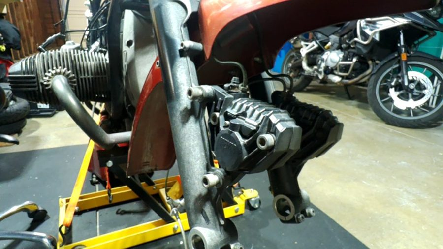
Rebuilding motorcycle brakesFitting the front calipers on a 1987 BMW R80RT, with the workshop manual read out step by step.
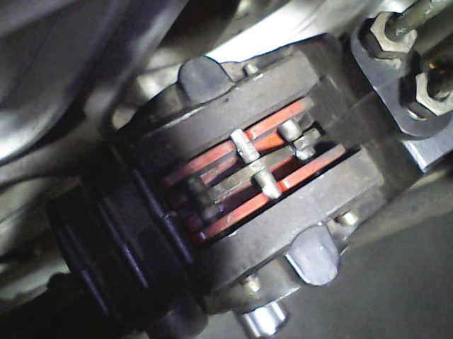
Seeing where I can'tA dragging brake, inspected through a probe camera plugged into Cyclops. It found the pin to pull.
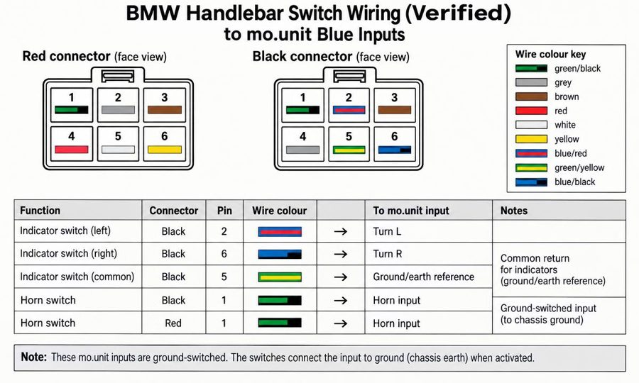
Wiring a handlebar switchI held up the connectors, it worked out the pins and drew the wiring diagram on its screen.
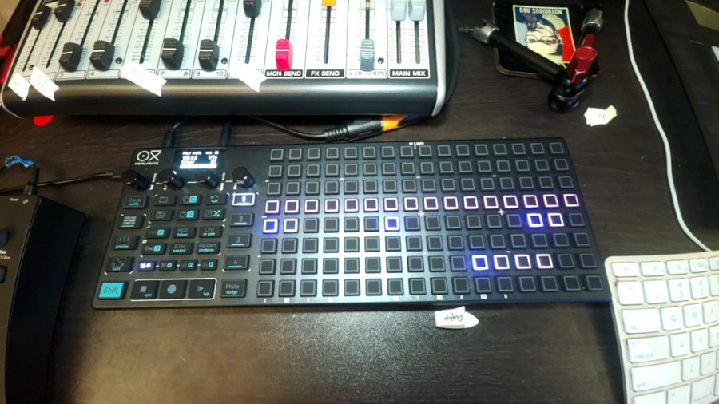
Programming a synthWriting a bassline on an OXI One for a TD-3, with Cyclops reading the manual for me.
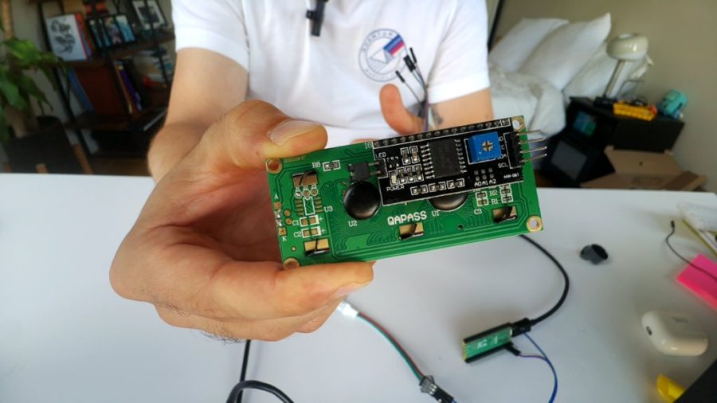
Electronics on the deskAn LED strip and an LCD on a Raspberry Pi Pico. Cyclops wrote and ran the code itself.
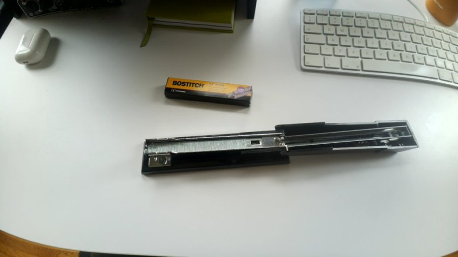
…and reloading a staplerNot every job is a big one.
How it's built
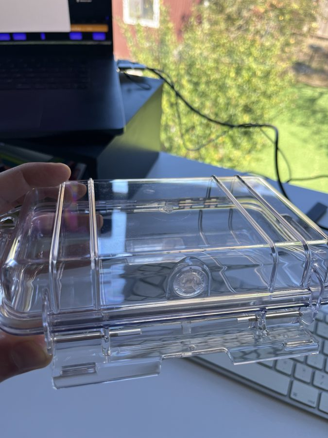
A sturdy-AF Pelican case.
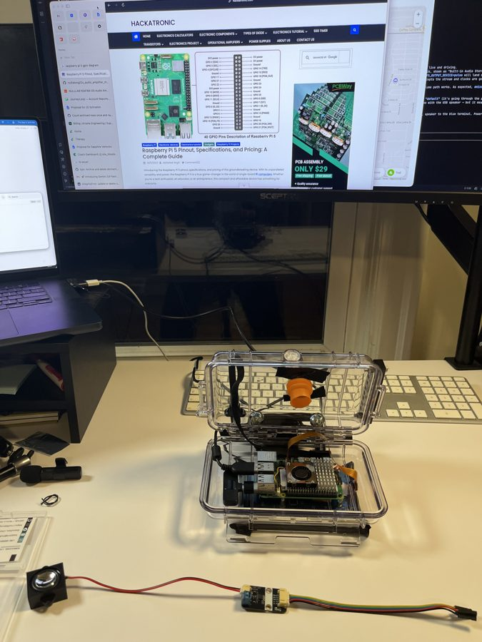
Raspberry Pi 5 + camera module.
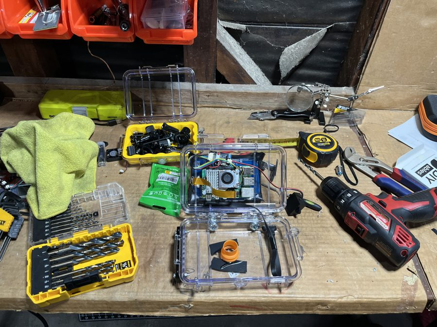
A USB port, for connectivity.
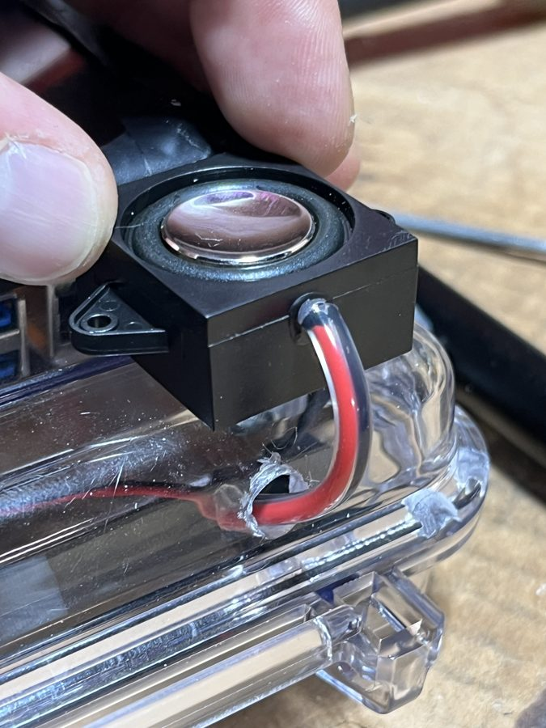
A tiny speaker.
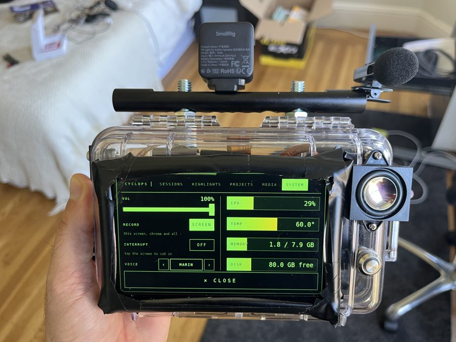
A 7" touchscreen.
Get involved
Cyclops is open source. Build your own, try it out, or just say hi. I'd love to hear what you'd use it for.